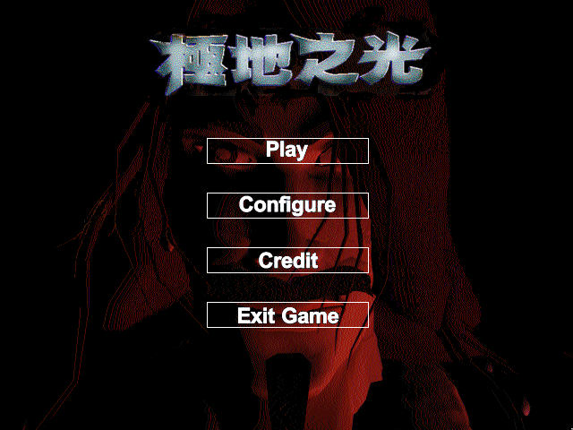
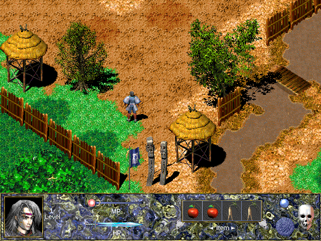
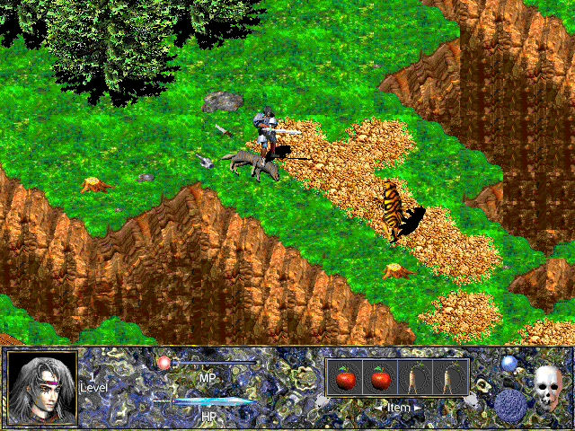

名稱：極地之光 (Khan: Myth of the Wind，中文版)
簡介：南韓CoMa 1999年出品的角色扮演遊戲，由EZSoft中文化並代理發行，以斜角3D畫面呈
現，採單人即時方式戰鬥 [待補]。



保護：光碟，破解碼：
khan.exe
F8 05 74 26
-- 02 75 --
75 19 68 6C
EB -- -- --
25 63 3A 5C
-- -- -- 00